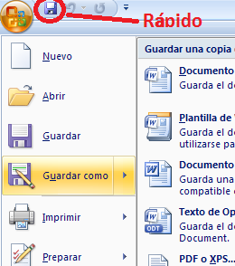
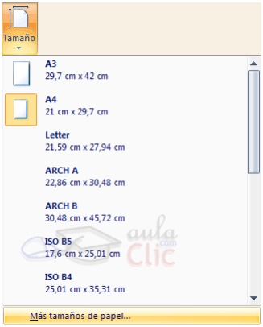

Word 2007 - Nivel Básico
Unidad 1
Al iniciar no encontraremos con una pantalla similar a la siguiente imagen:
En la parte superior esta, en color celeste, la barra de título, en la que aparece el nombre del documento sobre el que se esta trabajando. Cuando iniciamos Word 2007 sin abrir ningún documento, por defecto nos abre un documento en blanco y le asigna el nombre inicial Documento1. Cuando guardemos el documento le cambiaremos el nombre.
La barra de opciones.
Desde las pestañas de esta barra se pueden ejecutar todos los comandos de Word2007. En Word2007 la barra de opciones tiene un comportamiento "inteligente", que consiste, básicamente, en mostrar sólo los comandos más importantes y los que el usuario va utilizando; es decir se adaptan al uso de cada usuario. Inicialmente, cuando abrimos Word2007 aparece un menú de pestañas. Al seleccionar cada pestaña, aparecen grupos de herramientas que contienen los comandos más utilizados.
La pestaña Inicio contiene las operaciones más comunes sobre copiar, cortar y pegar, además de las operaciones de Fuente, Párrafo, Estilo y Edición. En Word2007 la pestaña Inicio se encuentra dividida en 5 secciones que contienen las operaciones correspondientes al Portapapeles Fuente (tamaño de letra, tipo de letra, etc.) Párrafo (alineación de texto, separación entre líneas, sangría, etc.) Estilo y Edición (buscar texto, reemplazar, etc.), Cada una de las secciones, se ha creado con botones de acceso rápido a la tarea que se desea realizar. Una forma más fácil e intuitiva de utilizar las herramientas.
La barra de herramientas de acceso rápido Contiene iconos para ejecutar de forma inmediata algunos de los comandos más habituales, como: Guardar, Deshacer, Ortografía y Gramática.
En la imagen ves la barra de herramientas de acceso rápido y el Botón Office (el primero a la izquierda), lo que antes era el menú Archivo.
a. GUARDAR Esta opción permite al usuario guardar en la memoria del ordenador el archivo que hemos trabajado. En la barra de acceso rápido ubica el icono o también puedes utilizar los comandos: Guardar y Guardar como... del Botón Office 
Guardar como, Word mostrará un cuadro de dialogo como el que ves a continuación que te permite cambiar el nombre del archivo, el tipo y la carpeta que lo contiene.
Guardar no se abrirá ningún cuadro de diálogo, simplemente se guardarán en su actual ubicación los cambios que hayas efectuado en el documento. Sin embargo, si utilizas el comando Guardar con un documento nuevo, que no ha sido guardado nunca, se abrirá el mismo cuadro de dialogo que para Guardar como
b. ABRIR Esta opción permite al usuario abrir un documento ya guardado para poder visualizarlo o modificarlo.
c. Cerrar un documeto, para poder cerrar un documento simplemente debemos ir al boton de office y seleccionar cerrar, o simplemente desde el margen superior derecho la cruz. (X).
Si el documento a cerrar no guardo los cambios nos consultara si deseamos guardar o cerrar.
Unidad 2: Fuentes y párrafos
Cuando hablamos del formato de un texto nos estamos refiriendo a las cuestiones que tienen que ver con el aspecto del texto, con la forma de presentar el texto.
Aunque lo fundamental cuando escribimos un texto es lo que se dice en él, la forma en la que lo vemos también tiene mucha importancia. Un texto con un buen contenido pero mal formateado pierde mucha calidad. Afortunadamente, es muy fácil dar un formato atractivo con Word2007. Con un poco de trabajo adicional para formatear un texto se consiguen resultados espectaculares, incluso puedes dar tu toque de diseño de forma que tus documentos se diferencien del resto.
En Word podemos clasificar las acciones que tienen que ver con el formato en tres grandes grupos.
a. FORMATO CARÁCTER. Afectan a los caracteres en sí mismos como el tipo de letra o fuente, tamaño, color, etc. Los caracteres son todas las letras, números, signos de puntuación y símbolos que se escriben como texto. Las letras incluidas en imágenes, no se consideran caracteres a estos efectos y no se les pueden aplicar los formatos que vamos a estudiar
Estilo
Una vez fijada la fuente y el tamaño podemos cambiar el estilo a uno de los tres disponibles: negrita, cursiva y subrayado Basta seleccionar el texto y hacer clic en el botón correspondiente. Observar como al aplicar un estilo, el botón correspondiente queda presionado (se ve en un tono anaranjado). Para quitar un estilo que hemos aplicado previamente, seleccionar el texto y volver a hacer clic sobre el estilo. También se pueden aplicar varios estilos a la vez, Simplemente hay que aplicar los estilos consecutivamente.
Fuente
Permite establecer un determinado tipo de letra que desees ver en tu archivo. Para ejecutar esta opción, puedes ir a:
La pestaña Inicio
Para cambiar el tipo de letra o fuente lo primero que tenemos que hacer es seleccionar los caracteres, palabras o líneas sobre los que queremos realizar el cambio. A continuación hacer clic sobre el pequeño triángulo que hay al lado de la fuente actual, esto hará que se abra una ventana con las fuentes disponibles.
Observa que el propio nombre de la fuente está representado en ese tipo de fuente, de forma que podemos ver el aspecto que tiene antes de aplicarlo. El menú despegable tiene dos zonas separadas por una doble línea horizontal, en la parte superior están las últimas fuentes utilizadas y en la parte inferior todas las disponibles. Podemos hacer clic en las flechas arriba y abajo de la barra de desplazamiento de la derecha para que vayan apareciendo todos los tipos de letra disponibles, también podemos desplazar el botón central para movernos más rápidamente. Una vez hemos encontrado la fuente que buscamos basta con hacer clic sobre ella para aplicarla.
Tamaño:
De forma parecida podemos cambiar el tamaño de la fuente. Seleccionar el texto y hacer clic en el triángulo para buscar el tamaño que deseemos, o escribirlo directamente. La unidad de medida es el punto (72 puntos = 1 pulgada = 2,54 cm), los tamaños más utilizados son 10 y 12 puntos.
Párrafo
Alineación
Estos son los botones para fijar la alineación. Hay cuatro tipos de alineación:
Izquierda |
Centrada |
Derecha |
Justificada |
Este párrafo tiene establecida alineación izquierda. |
Este párrafo tiene establecida alineación izquierda. |
Este párrafo tiene establecida alineación izquierda. |
Este párrafo tiene establecida alineación izquierda. |
Cuando hablamos de alinear un párrafo nos referimos, normalmente, a su alineación respecto de los márgenes de la página, pero también podemos alinear el texto respecto de los bordes de las celdas, si es que estamos dentro de una tabla.
Sangría:
Aplicar una sangría a un párrafo es desplazar un poco el párrafo hacia la derecha o izquierda. Se realiza seleccionando el párrafo y haciendo clic en uno de estos botones de la pestaña Inicio en el grupo de herramientas Párrafo, según queramos desplazar hacia la izquierda o hacia la derecha. Así desplazamos el párrafo 1,25 cm. cada vez que hacemos clic en el botón, pero también se puede desplazar otro valor que deseemos
Unidad 3: Diseño y Configuración de Página
Configurar Página
Cuando estamos escribiendo en un documento Word es como si lo hiciéramos en una hoja de papel que luego puede ser impresa. Por lo tanto, existe un área en la cual podemos escribir y unos márgenes los cuales no podemos sobrepasar.
Estos márgenes se definen en la pestaña Diseño de página, en el grupo de herramientas Configurar página, se nos muestra las herramientas con las que se puede modificar Márgenes, Orientación, Saltos de página, Tamaño, Números de línea, Columnas y Guiones.
Al hacer clic sobre el botón Márgenes, aparecen unos márgenes predeterminados que se pueden utilizar para agilizar la tarea. Si ninguno de esos márgenes es correcto para el documento que está realizando, entonces se puede personalizar haciendo clic en la opción Márgenes Personalizados.
También se puede modificar el tamaño de la hoja, en la cual saldrá impreso el documento. Al hacer clic en el botón Tamaño, se abre una lista de Tamaños predeterminados. Pero, al igual que en los márgenes, aquí también se puede personalizar el tamaño de la hoja, haciendo clic en la opción Más tamaños de papel.

En el cuadro de diálogo de la pestaña Márgenes podemos fijar los márgenes tecleando los cm. deseados en cada campo.
Superior: debemos indicar la distancia entre el borde superior de la página y la primera línea del documento.
Inferior: indicaremos la distancia entre la última línea del documento y el borde inferior de la página.
Izquierdo: introduciremos la distancia entre el borde izquierdo de la página y el principio de las líneas del documento.
Derecho: indicaremos la distancia entre el borde derecho de la página y el final de las líneas del documento.
Encuadernación. Es un espacio adicional para cuando vamos a utilizar las páginas para encuadernar un libro.
Posición del margen interno. Posición del margen interno, normalmente se refiere al margen de encuadernación.
Orientación. Aquí indicamos si la página tiene orientación vertical (la más usual) o horizontal (también llamada apaisada).
Páginas. Podemos establecer varias páginas, en ese caso tenemos varias opciones: Márgenes simétricos, Dos páginas por hoja o Libro plegado. Al establecer cada una de estas opciones la vista previa te mostrará claramente en que consisten.
En la parte derecha de la pantalla tenemos la Vista previa que nos dará una idea bastante aproximada de cómo afectan los cambios que hemos introducido al diseño de la página.
Si pulsamos el botón Predeterminar, los valores actuales serán los que se utilicen en los nuevos documentos que creemos.
En la pestaña Papel determinaremos el tipo de papel a utilizar para la impresora, A4, Carta, etc. y también la bandeja de la que tomará el papel la impresora, en caso de que tenga más de una.
En la pestaña Diseño fijaremos la posición de Encabezados y pies de página. Hemos dicho que fuera de los márgenes no se puede escribir, pero hay una excepción, los encabezados y pies de página se escriben en la zona de los márgenes. Si vamos a utilizar encabezados o pies de página, debemos tenerlo en cuenta a la hora de fijar la amplitud de los márgenes.
Los encabezados y pies de página son un texto, generalmente de una o dos líneas, que se repite en todas las páginas, donde se suele indicar cosas como el título del documento, el autor, etc. Los veremos con detalle en el punto correspondiente de esta unidad. Si vamos a utilizar encabezados o pies de página deberemos ir a la pestaña Diseño y en ese cuadro de diálogo rellenaremos los campos correspondientes:
Encabezado:
indicaremos los cm. que deseamos que haya entre el borde superior del papel y la primera línea del encabezado.
Pie de página:
diremos los cm. que deben quedar entre la última línea del pie de página y el borde inferior de la página. Una vez fijados todos los parámetros que acabamos de ver para apreciar el efecto global de los márgenes en nuestro documento debemos pasar a vista de Diseño de impresión. Esta imagen es un ejemplo de vista Diseño de impresión de una página con encabezado y pie de página.
Evaluación - Administración de documentos
1) La opción de guardar se encuentra en...
Pestaña de diseñoPestaña de insertar
Botón Oficce
Barra de acceso rápido
2) ¿Cuál es el ícono del botón abrir?
3) ¿Dónde se encuentra el nombre del documento?
En el pie de páginaEn la barra de título
en la cinta de opciones
4) La cantidad de páginas del documento podemos encontrarla en:
Botón de OfficeBarra de desplazamiento
Barra de estado
Zoom
Evaluación - Fuentes/Estilos y Párrafos
1) La fuente nos permite modificar:
TipografíaTamaño de la letra
Guardar un documento
Modificar las imágenes
2) Se aplica sangría a la primer oración luego de un punto y aparte.
VerdaderoFalso
3) ¿En que pestaña podemos encontrar la opción para cambiar el estilo de texto?
Pestaña InicioPestaña Insertar
Pestaña de Diseño de Página
4) Seleccione el ícono de copiar


5) Seleccione el botón de Negrita
Evaluación - Diseño de Página
1) En la pestaña diseño de página encontramos...
Cómo ver las reglasCómo modificar los márgenes
Cómo insertar una tabla
2) En la pestaña diseño de página encontramos las siguientes orientaciones (Marque las correctas)
HorizontalDiagonal
Vértical
3) Cuál de los siguientes íconos NO corresponde a la pestaña de diseño de página
4) ¿En que pestaña encontramos el ícono paara modificar el tamaño de la página?
Pestaña InicioPestaña Vista
Ninguna de las anteriores